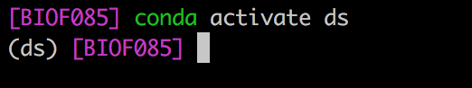

A Python Primer¶
Introduction¶
Python is a popular, general purpose scripting language. The TIOBE index ranks Python as the third most popular programming language after C and Java, while this recent article in IEEE Computer Society says
“Python can be used for web and desktop applications, GUI-based desktop applications, machine learning, data science, and network servers. The programming language enjoys immense community support and offers several open-source libraries, frameworks, and modules that make application development a cakewalk.” (Belani, 2020)
Python is a modular language¶
Python is not a monolithic language but is comprised of a base programming language and numerous modules or libraries that add functionality to the language. Several of these libraries are installed with Python. The Anaconda Python Distribution adds more libraries that are useful for data science. Some libraries we will use include numpy, pandas, seaborn, statsmodels and scikit-learn. In the course of this workshop we will learn how to use Python libraries in your workflow.
Python is a scripting language¶
Using Python requires typing!! You write code in Python that is then interpreted by the Python interpreter to make the computer implement your instructions. Your code is like a recipe that you write for the computer. Python is a high-level language in that the code is English-like and human-readable and understandable, which reduces the time needed for a person to create the recipe. It is a language in that it has nouns (variables or objects), verbs (functions) and a structure or grammar that allows the programmer to write recipes for different functionalities.
One thing that is important to note in Python: case is important!. If we have two objects named data and Data, they will refer to different things.
Scripting can be frustrating in the beginning. You will find that the code you wrote doesn’t work “for some reason”, though it looks like you wrote it fine. The first things I look for, in order, are
Did I spell all the variables and functions correctly
Did I close all the brackets I have opened
Did I finish all the quotes I started, and paired single- and double-quotes
Did I already import the right module for the function I’m trying to use.
These may not make sense right now, but as we go into Python, I hope you will remember these to help debug your code.
An example¶
Let’s consider the following piece of Python code:
# set a splitting point
split_point = 3
# make two empty lists
lower = []; upper = []
# Split numbers from 0 to 9 into two groups,
# one lower or equal to the split point and
# one higher than the split point
for i in range(10): # count from 0 to 9
if i <= split_point:
lower.append(i)
else:
upper.append(i)
print("lower:", lower)
print("upper:", upper)
lower: [0, 1, 2, 3]
upper: [4, 5, 6, 7, 8, 9]
First note that any line (or part of a line) starting with # is a comment in Python and is ignored by the interpreter. This makes it possible for us to write substantial text to remind us what each piece of our code does
The first piece of code that the Python interpreter actually reads is
split_point = 3
This takes the number 3 and stores it in the variable split_point. Variables are just names where some Python object is stored. It really works as an address to some particular part of your computer’s memory, telling the Python interpreter to look for the value stored at that particular part of memory. Variable names allow your code to be human-readable since it allows you to write expressive names to remind yourself what you are storing. The rules of variable names are:
Variable names must start with a letter or underscore
The rest of the name can have letters, numbers or underscores
Names are case-sensitive
The next piece of code initializes two lists, named lower and upper.
lower = []; upper = []
The semi-colon tells Python that, even though written on the same line, a particular instruction ends at the semi-colon, then another piece of instruction is written.
Lists are a catch-all data structure that can store different kinds of things, In this case we’ll use them to store numbers.
The next piece of code is a for-loop or a loop structure in Python.
for i in range(10): # count from 0 to 9
if i <= split_point:
lower.append(i)
else:
upper.append(i)
It basically works like this:
State with the numbers 0-9 (this is achieved in
range(10))Loop through each number, naming it
ieach timeComputer programs allow you to over-write a variable with a new value
If the number currently stored in
iis less than or equal to the value ofsplit_point, i.e., 3 then add it to the listlower. Otherwise add it to the listupper
Note the indentation in the code. This is not by accident. Python understands the extent of a particular block of code within a for-loop (or within a if statement) using the indentations. In this segment there are 3 code blocks:
The for-loop as a whole (1st indentation)
The
ifstatement testing if the number is less than or equal to the split point, telling Python what to do if the test is trueThe
elsestatement stating what to do if the test in theifstatement is false
Every time a code block starts, the previous line ends in a colon (:). The code block ends when the indentation ends. We’ll go into these elements in a bit.
The last bit of code prints out the results
print("lower:", lower)
print("upper:", upper)
lower: [0, 1, 2, 3]
upper: [4, 5, 6, 7, 8, 9]
The print statement adds some text, and then prints out a representation of the object stored in the variable being printed. In this example, this is a list, and is printed as
lower: [0, 1, 2, 3]
upper: [4, 5, 6, 7, 8, 9]
We will expand on these concepts in the next few sections.
Some general rules on Python syntax¶
Comments are marked by
#A statement is terminated by the end of a line, or by a
;.Indentation specifies blocks of code within particular structures. Whitespace at the beginning of lines matters. Typically you want to have 2 or 4 spaces to specify indentation, not a tab (\t) character. This can be set up in your IDE.
Whitespace within lines does not matter, so you can use spaces liberally to make your code more readable
Parentheses (
()) are for grouping pieces of code or for calling functions.
There are several conventions about code styling including the one in PEP8 (PEP = Python Enhancement Proposal) and one proposed by Google. We will typically be using lower case names, with words separated by underscores, in this workshop, basically following PEP8. Other conventions are of course allowed as long as they are within the basic rules stated above.
Data types in Python¶
We start with objects in Python. Objects can be of different types, including numbers (integers and floats), strings, arrays (vectors and matrices) and others. Any object can be assigned to a name, so that we can refer to the object in our code. We’ll start with the basic types of objects.
Numeric variables¶
The following is a line of Python code, where we assign the value 1.2 to the variable a.
The act of assigning a name is done using the
=sign. This is not equality in the mathematical sense, and has some non-mathematical behavior, as we’ll see
a = 1.2
This is an example of a floating-point number or a decimal number, which in Python is called a float. We can verify this in Python itself.
type(a)
float
Floating point numbers can be entered either as decimals or in scientific notation
x = 0.0005
y = 5e-4 # 5 x 10^(-4)
print(x == y)
True
You can also store integers in a variable. Integers are of course numbers, but can be stored more efficiently on your computer. They are stored as an integer type, called int
b = 23
type(b)
int
These are the two primary numerical data types in Python. There are some others that we don’t use as often, called long (for long integers) and complex (for complex numbers)
Operations on numbers¶
There is an arithmetic and logic available to operate on elemental data types. For example, we do have addition, subtraction , multiplication and division available. For example, for numbers, we can do the following:
Operation |
Result |
|---|---|
x + y |
The sum of x and y |
x - y |
The difference of x and y |
x * y |
The product of x and y |
x / y |
The quotient of x and y |
- x |
The negative of x |
abs(x) |
The absolute value of x |
x ** y |
x raised to the power y |
int(x) |
Convert a number to integer |
float(x) |
Convert a number to floating point |
Let’s see some examples:
x = 5
y = 2
x + y
7
x - y
3
x * y
10
x / y
2.5
x ** y
25
Strings¶
Strings are how text is represented within Python. It is always represented as a quoted object using either single ('') or double ("") quotes, as long as the types of quotes are matched. For example:
first_name = "Abhijit"
last_name = "Dasgupta"
The data type that these are stored in is str.
type(first_name)
str
Operations¶
Strings also have some “arithmetic” associated with it, which involves, essentially, concatenation and repetition. Let’s start by considering two character variables that we’ve initialized.
a = "a"
b = "b"
Then we get the following operations and results
Operation |
Result |
|---|---|
a + b |
‘ab’ |
a * 5 |
‘aaaaa’ |
We can also see if a particular character or character string is part of an exemplar string
last_name = "Dasgupta"
"gup" in last_name
True
String manipulation is one of the strong suites of Python.
There are several functions that apply to strings, that we will look at throughout the workshop, and especially when we look at string manipulation. In particular, there are built-in functions in base Python and powerful regular expression capabilities in the re module.
Truthiness¶
Truthiness means evaluating the truth of a statement. This typically results in a Boolean object, which can take values True and False, but Python has several equivalent representations. The following values are considered the same as False:
None,False, zero (0,0L,0.0), any empty sequence ([],'',()), and a few others
All other values are considered True. Usually we’ll denote truth by True and the number 1.
Operations¶
We will typically test for the truth of some comparisons. For example, if we have two numbers stored in x and y, then we can perform the following comparisons
Operation |
Result |
|---|---|
x < y |
x is strictly less than y |
x <= y |
x is less than or equal to y |
x == y |
x equals y (note, it’s 2 = signs) |
x != y |
x is not equal to y |
x > y |
x is strictly greater than y |
x >= y |
x is greater or equal to y |
We can chain these comparisons using Boolean operations
Operation |
Result |
|---|---|
x | y |
Either x is true or y is true or both |
x & y |
Both x and y are true |
not x |
if x is true, then false, and vice versa |
For example, if we have a number stored in x, and want to find out if it is between 3 and 7, we could write
(x >= 3) & (x <= 7)
True
A note about variables and types¶
Some computer languages like C, C++ and Java require you to specify the type of data that will be held in a particular variable. For example,
int x = 4;
float y = 3.25;
If you try later in the program to assign something of a different type to that variable, you will raise an error. For example, if I did, later in the program, x = 3.95;, that would be an error in C.
Python is dynamically typed, in that the same variable name can be assigned to different data types in different parts of the program, and the variable will simply be “overwritten”. (This is not quite correct. What actually happens is that the variable name now “points” to a different part of the computer’s memory where the new data is then stored in appropriate format). So the following is completely fine in Python:
x = 4 # An int
x = 3.5 # A float
x = "That's my mother" # A str
x = True # A bool
Variables are like individual ingredients in your recipe. It’s mis en place or setting the table for any operations (functions) we want to do to them. In a language context, variables are like nouns, which will be acted on by verbs (functions). In the next section we’ll look at collections of variables. These collections are important in that it allows us to organize our variables with some structure.
Data structures in Python¶
Python has several in-built data structures. We’ll describe the three most used ones:
Lists (
[])Tuples (
())Dictionaries or dicts (
{})
Note that there are three different kinds of brackets being used.
Lists are baskets that can contain different kinds of things. They are ordered, so that there is a first element, and a second element, and a last element, in order. However, the kinds of things in a single list doesn’t have to be the same type.
Tuples are basically like lists, except that they are immutable, i.e., once they are created, individual values can’t be changed. They are also ordered, so there is a first element, a second element and so on.
Dictionaries are unordered key-value pairs, which are very fast for looking up things. They work almost like hash tables. Dictionaries will be very useful to us as we progress towards the PyData stack. Elements need to be referred to by key, not by position.
Lists¶
test_list = ["apple", 3, True, "Harvey", 48205]
test_list
['apple', 3, True, 'Harvey', 48205]
There are various operations we can do on lists. First, we can determine the length (or size) of the list
len(test_list)
5
The list is a catch-all, but we’re usually interested in extracting elements from the list. This can be done by position, since lists are ordered. We can extract the 1^st^ element of the list using
test_list[0]
'apple'
Wait!! The index is 0?
Yup. Python is based deep underneath on the C language, where counting starts at 0. So the first element has index 0, second has index 1, and so on. So you need to be careful if you’re used to counting from 1, or, if you’re used to R, which does start counting at 1.
We can also extract a set of consecutive elements from a list, which is often convenient. The typical form is to write the index as a:b. The (somewhat confusing) rule is that a:b means that you start at index a, but continue until before index b. So the notation 2:5 means include elements with index 2, 3, and 4. In the Python world, this is called slicing.
test_list[2:5]
[True, 'Harvey', 48205]
If you want to start at the beginning or go to the end, there is a shortcut notation. The same rule holds, though. :3 does not include the element at index 3, but 2: does include the element at index 2.
test_list[:3]
['apple', 3, True]
test_list[2:]
[True, 'Harvey', 48205]
The important thing here is if you provide an index a:b, then a is include but b is not.
You can also count backwards from the end. The last element in a Python list has index -1.
index |
0 |
1 |
2 |
3 |
4 |
element |
‘apple’ |
3 |
True |
‘Harvey’ |
48205 |
counting backwards |
-5 |
-4 |
-3 |
-2 |
-1 |
test_list[-1]
48205
You can also use negative indices to denote sequences within the list, with the same indexing rule applying. Note that you count from the last element (-1) and go backwards.
test_list[:-1]
['apple', 3, True, 'Harvey']
test_list[-3:]
[True, 'Harvey', 48205]
test_list[-3:-1]
[True, 'Harvey']
You can also make a list of lists, or nested lists
test_nested_list = [[1, "a", 2, "b"], [3, "c", 4, "d"]]
test_nested_list
[[1, 'a', 2, 'b'], [3, 'c', 4, 'd']]
This will come in useful when we talk about arrays and data frames.
You can also check if something is in the list, i.e. is a member.
"Harvey" in test_list
True
Lists have the following properties
They can be heterogenous (each element can be a different type)
Lists can hold complex objects (lists, dicts, other objects) in addition to atomic objects (single numbers or words)
List have an ordering, so you can access list elements by position
List access can be done counting from the beginning or the end, and consecutive elements can be extracted using slices.
Tuples¶
Tuples are like lists, except that once you create them, you can’t change them. This is why tuples are great if you want to store fixed parameters or entities within your Python code, since they can’t be over-written even by mistake. You can extract elements of a tuple, but you can’t over-write them. This is called immutable.
Note that, like lists, tuples can be heterogenous, which is also useful for coding purposes, as we will see.
test_tuple = ("apple", 3, True, "Harvey", 48205)
test_tuple[:3]
('apple', 3, True)
test_list[0] = "pear"
test_list
['pear', 3, True, 'Harvey', 48205]
See what happens in the next bit of code
test_tuple[0] = "pear"
test_tuple
(I’m not running this since it gives an error)
Tuples are like lists, but once created, they cannot be changed. They are ordered and can be sliced.
Dictionaries¶
Dictionaries, or dict, are collections of key-value pairs. Each element is referred to by key, not by index. In a dictionary, the keys can be strings, numbers or tuples, but the values can be any Python object. So you could have a dictionary where one value is a string, another is a number and a third is a DataFrame (essentially a data set, using the pandas library). A simple example might be an entry in a list of contacts
contact = {
"first_name": "Abhijit",
"last_name": "Dasgupta",
"Age": 48,
"address": "124 Main St",
"Employed": True,
}
Note the special syntax. You separate the key-value pairs by colons (:), and each key-value pair is separated by commas. If you get a syntax error creating a dict, look at these first.
If you try to get the first name out using an index, you run into an error:
contact[0]
---------------------------------------------------------------------------
KeyError Traceback (most recent call last)
/var/folders/k4/xvcmx4yx76xdbl41zy3hq8rc0000gn/T/ipykernel_26922/2034927730.py in <module>
----> 1 contact[0]
KeyError: 0
You need to extract it by key
contact["first_name"]
'Abhijit'
A dictionary is mutable, so you can change the value of any particular element
contact["address"] = "123 Main St"
contact["Employed"] = False
contact
{'first_name': 'Abhijit',
'last_name': 'Dasgupta',
'Age': 48,
'address': '123 Main St',
'Employed': False}
You can see all the keys and values in a dictionary using extractor functions
contact.keys()
dict_keys(['first_name', 'last_name', 'Age', 'address', 'Employed'])
contact.values()
dict_values(['Abhijit', 'Dasgupta', 48, '123 Main St', False])
It turns out that dictionaries are really fast in terms of retrieving information, without having to count where an element it. So it is quite useful
We’ll see that dictionaries are also one way to easily create pandas DataFrame objects on the fly.
There are a couple of other ways to create dict objects. One is using a list of tuples. Each key-value pair is represented by a tuple of length 2, where the 1st element is the key and the second element is the value.
A = [('first_name','Abhijit'),('last_name','Dasgupta'),('address', '124 Main St')]
dict(A)
{'first_name': 'Abhijit', 'last_name': 'Dasgupta', 'address': '124 Main St'}
This actually can be utilized to create a dict from a pair of lists. There is a really neat function, zip, that inputs several lists of the same length and creates a list of tuples, where the i-th element of each tuple comes from the i-th list, in order.
A = ['first_name', 'last_name','address']
B = ['Abhijit','Dasgupta','124 Main St']
dict(zip(A, B))
{'first_name': 'Abhijit', 'last_name': 'Dasgupta', 'address': '124 Main St'}
The
zipfunction is quite powerful in putting several lists together with corresponding elements of each list into a tuple
On a side note, there is a function defaultdict from the collections module that is probably better to use. We’ll come back to it when we talk about modules.
Operational structures in Python¶
Loops and list comprehensions¶
Loops are a basic construct in computer programming. The basic idea is that you have a recipe that you want to repeatedly run on different entities that you have created. The crude option would be to copy and paste your code several times, changing whatever inputs change across the entities. This is not only error-prone, but inefficient given that loops are a standard element of all programming languages.
You can create a list of these entities, and, using a loop, run your recipe on each entity automatically. For example, you have a data about votes in the presidential election from all 50 states, and you want to figure out what the percent voting for each major party is. So you could write this recipe in pseudocode as
Start with a list of datasets, one for each state
for each state
compute and store fraction of votes that are Republican
compute and store fraction of votes that are Democratic
This is just English, but it can be translated easily into actual code. We’ll attempt that at the end of this section.
The basic idea of a list is that there is a list of things you want to iterate over. You create a dummy variable as stand-in for each element of that list. Then you create a for-loop. This works like a conveyor belt and basket, so to speak. You line up elements of the list on the conveyor belt, and as you run the loop, one element of the list is “scooped up” and processed. Once that processing is done, the next element is “scooped up”, and so forth. The dummy variable is essentially the basket (so the same basket (variable name) is re-used over and over until the conveyor belt (list) is empty).
In the examples below, we are showing a common use of for loops where we are enumerating the elements of a list as 0, 1, 2, … using range(len(test_list)). So the dummy variable i takes values 0, 1, 2, … until the length of the list is reached. For each value of i, this for loop prints the i-th element of test_list.
for i in range(len(test_list)):
print(test_list[i])
pear
3
True
Harvey
48205
Sometimes using the index number is easier to understand. However, we don’t need to do this. We can just send the list itself into the for-loop (u) now is the dummy variable containing the actual element of test_list. We’ll get the same answer.
for u in test_list:
print(u)
pear
3
True
Harvey
48205
The general structure for a
forloop is:for (element) in (list): do some stuff do more stuff
As a more practical example, let’s try and sum a set of numbers using a for-loop (we’ll see much better ways of doing this later)
test_list2 = [1, 2, 3, 4, 5, 6, 7, 8, 9, 10]
mysum = 0
for u in test_list2:
mysum = mysum + u
print(mysum)
55
There are two things to note here.
The code
mysum = mysum + uis perfectly valid, once you realize that this isn’t really math but an assignment or pointer to a location in memory. This code says that you find the current value stored inmysum, add the value ofuto it, and then store it back into the storage thatmysumpoints toIndentation matters! Indent the last line and see what happens when you run this code
A little deeper¶
The entity to the right of the in in the for-loop can be an iterator, which is a generalization of a list. For example, we used range(len(test_list2)) above. If we just type
range(10)
range(0, 10)
nothing really happens. This is an example of an iterator, which is only evaluated when it is called, rather than being stored in memory. This is useful especially when you iterate over large numbers of things, in terms of preserving memory and speed. To see the corresponding list, you would do
list(range(10))
[0, 1, 2, 3, 4, 5, 6, 7, 8, 9]
This range iterator is quite flexible:
list(range(5, 10)) # range from 5 to 10
[5, 6, 7, 8, 9]
list(range(0, 10, 2)) # range from 0 to 10 by 2
[0, 2, 4, 6, 8]
Note the rules here are very much like the slicing rules.
Other iterators that are often useful are the enumerate iterator and the zip iterator.
enumerate automatically creates both the index and the value for each element of a list.
L = [0, 2, 4, 6, 8]
for i, val in enumerate(L):
print(i, val)
0 0
1 2
2 4
3 6
4 8
zip puts multiple lists together and creates a composite iterator. You can have any number of iterators in zip, and the length of the result is determined by the length of the shortest iterator. We introduced an example of zip as a way to create a dict.
Technically,
zipcan take multiple iterators as inputs, not just lists
first = ["Han", "Luke", "Leia", "Anakin"]
last = ["Solo", "Skywalker", "Skywaker", "Skywalker"]
types = ['light','light','light','light/dark/light']
for val1, val2, val3 in zip(first, last, types):
print(val1, val2, ' : ', val3)
Han Solo : light
Luke Skywalker : light
Leia Skywaker : light
Anakin Skywalker : light/dark/light
Controlling loops¶
There are two statements that can affect how loops run:
The
breakstatement breaks out of the loopThe
continuestatement skips the rest of the current loop and continues to the next element
For example
x = list(range(10))
for u in x:
if u % 2 == 1: # If u / 2 gives a remainder of 1
continue
if u >= 8:
break
print(u)
0
2
4
6
In this loop, we don’t print the odd numbers, and we stop the loop once it gets to 8.
List comprehensions¶
List comprehensions are quick ways of generating a list from another list by using some recipe. For example, if we wanted to create a list of the squares of all the numbers in test_list2, we could write
squares = [u ** 2 for u in test_list2]
squares
[1, 4, 9, 16, 25, 36, 49, 64, 81, 100]
Similarly, if we wanted to find out what the types of each element of test_tuple is, we could use
[type(u) for u in test_tuple]
[str, int, bool, str, int]
Exercise: Can you use a list comprehension to find out the types of each element of the contact dict?
We can also use list comprehensions to extract arbitrary sets of elements of lists
test = ['a','b','c','d','e','f','g']
test1 = [test[i] for i in [0,2,3,5]]
test1
['a', 'c', 'd', 'f']
Conditional evaluations¶
The basic structure for conditional evaluation of code is an if-then-else structure.
if Condition 1 is true then
do Recipe 1
else if (elif) Condition 2 is true then
do Recipe 2
else
do Recipe 3
In Python, this is implemented as a if-elif-else structure. Let’s take an example where we have a list of numbers, and we want to record whether the number is negative, odd, or even.
x = [-2, -1, 0, 1, 2, 3, 4, 5, 6, 7, 8, 9, 10]
y = [] # an empty list
for u in x:
if u < 0:
y.append("Negative")
elif u % 2 == 1: # what is remainder when dividing by 2
y.append("Odd")
else:
y.append("Even")
print(y)
['Negative', 'Negative', 'Even', 'Odd', 'Even', 'Odd', 'Even', 'Odd', 'Even', 'Odd', 'Even', 'Odd', 'Even']
Note here that the indentation (leading whitespace) is crucial to this structure. The if-elif-else structure is embedded in a for-loop, so the entire structure in indented. Also, each particular recipe is also indented within the if-elif-else structure.
The
elifis optional, in that if you have only 2 conditions, then anif-elsestructure is sufficient. However, you can have multipleelif’s if you have more conditions. This kind of structure has to start with anif, end with anelseand can have 0 or moreelifin the middle.
Functions¶
We’ve already seen some examples of functions, such as the print() function. For example, if we write print(y), the function name is print and the functions argument is y. So what are functions?
Functions are basically encapsulated recipes. They are groups of code that are given a name and can be called with 0 or more arguments. In a cookbook, you might have a recipe for pasta primavera. This is the name of a recipe that has ingredients and a method to cook. In Python, a similar recipe for the mean might be as follows:
def my_mean(x):
y = 0
for u in x:
y += u
y = y / len(x)
return y
This takes a list of numbers x, loops over the elements of x to find their sum, and then divides by the length of x to compute the mean. It then returns this mean.
The notation
+=is a shortcut often used in programming. The statementy += umeans, take the current value ofy, add the value ofuto it, and store it back in toy. This is a shorthand fory = y + u. In analogous fashion, you can use-=,*=and/=to do subtraction, multiplication and division respectively.
A Python function must start with the keyword def followed by the name of the function, the arguments within parentheses, and then a colon. The actual code for the function is indented, just like in for-loops and if-elif-else structures. It ends with a return function which specifies the output of the function.
To use the my_mean function,
x = list(range(10))
my_mean(x)
4.5
Documenting your functions¶
Python has an in-built documentation system that allows you to readily document your functions using docstrings. Basically, right after the first line with def, you can create a (multi-line) string that documents the function and will be printed if the help system is used for that function. You can create a multi-line string by bounding it with 3 quotation marks on each side. For example,
def my_mean(x):
"""
A function to compute the mean of a list of numbers.
INPUTS:
x : a list containing numbers
OUTPUT:
The arithmetic mean of the list of numbers
"""
y = 0
for u in x:
y = y + u
y = y / len(x)
return y
help(my_mean)
Help on function my_mean in module __main__:
my_mean(x)
A function to compute the mean of a list of numbers.
INPUTS:
x : a list containing numbers
OUTPUT:
The arithmetic mean of the list of numbers
Modules and Packages¶
Python itself was built with the principle “Batteries included”, in that it already comes with useful tools for a wide variety of tasks. On top of that, there is a large ecosystem of third-party tools and packages that can be added on to add more functionality. Almost all the data science functionality in Python comes from third-party packages.
Using modules¶
The Python standard library as well as third-party packages (which I’ll use interchangeably with the term libraries) are structured as modules. In order to use a particular module you have to “activate” it in your Python session using the import statement.
import math
math.cos(math.pi)
-1.0
In these statements, we have imported the math module. This module has many functions, one of which is the cosine or cos function. We use the notation math.cos to let Python know that we want to use the cos function that is in the math module. The value of \(\pi\) is also stored in the math module as math.pi, ie. the element pi within the moduel math.
Modules can often have long names, so Python caters to our laziness by allowing us to create aliases for modules when we import them. In this workshop we will use the following statements quite often
import numpy as np
import pandas as pd
import matplotlib.pyplot as plt
These statements import 3 modules into the current Python session, namely numpy, pandas and a submodule of the matplotlib module called pyplot. In each case, we have provided an alias to the module that is imported. So, in subsequent calls, we can just use the aliases.
np.cos(np.pi)
-1.0
If we only want some particular components of a module to be imported, we can specify them using the from ... import ... syntax. These imported components will not need the module specification when we subsequently use them.
from math import pi, sin, cos
print(sin(pi))
print(cos(pi))
1.2246467991473532e-16
-1.0
We had made reference to the defaultdict function from the collections module before. Using this instead of dict can be advantagous sometimes in data scientific work.
from collections import defaultdict
A = defaultdict(list) # Specify each component will be a list
B = {}
s = [('yellow', 1), ('blue', 2), ('yellow', 3), ('blue', 4), ('red', 1)]
for k,v in s: # k = key, v = value
B[k].append(v)
---------------------------------------------------------------------------
KeyError Traceback (most recent call last)
/var/folders/k4/xvcmx4yx76xdbl41zy3hq8rc0000gn/T/ipykernel_26922/2581827358.py in <module>
6 s = [('yellow', 1), ('blue', 2), ('yellow', 3), ('blue', 4), ('red', 1)]
7 for k,v in s: # k = key, v = value
----> 8 B[k].append(v)
KeyError: 'yellow'
for k,v in s:
A[k].append(v)
A
defaultdict(list, {'yellow': [1, 3], 'blue': [2, 4], 'red': [1]})
The defaultdict sees a new key, and adds it to the dict, initializing it with an empty list (since we specified defaultdict(list). The normal dict requires the key to already be in place in the dict for any operations to take place on that key-value pair. So the default dict is safer for on-the-fly work and when we don’t know beforehand what keys we will encounter when storing data into the dict.
There is a temptation to use this method to import everything in a module so you don’t have to specify the module. This is a bad practice generally, both because you clutter up the namespace that Python reads from, and because you may unknowingly over-write and replace a function from one module with one from another module, and you will have a hard time debugging your code.
The code you do NOT want to use is
from math import *
Useful modules in Python’s standard library¶
Module |
Description |
|---|---|
|
Interfacing with the operating system, including files, directories, and executing shell commands |
|
Mathematical functions |
|
Constructing and using iterators |
|
Generate random numbers |
|
More general collections for objects, beyond lists, tuples and dicts |
Installing third-party packages/libraries¶
The Anaconda Python distribution comes with its own installer and package manager called conda. The Anaconda repository contains most of the useful packages for data science, and many come pre-installed with the distribution. However, you can easily install packages using the conda manager.
conda install pandas
would install the pandas package into your Python installation. If you wanted a particular version of this package, you could use
conda install pandas=0.23
to install version 0.23 of the pandas package.
Anaconda also provides a repository for user-created packages. For example, to install the Python package RISE which I use for creating slides from Jupyter notebooks, I use
conda install -c conda-forge rise
Sometimes you may find a Python package that is not part of the Anaconda repositories. Then you can use the more general Python program pip to install packages
pip install supersmoother
This goes looking in the general Python package repository PyPi, which you can also search on a web browser.
Environments¶
One of the nice things about Python is that you can set up environments for particular projects, that have all the packages you need for that project, without having to install those packages system-wide. This practice is highly recommended, since it creates a sandbox for you to play in for a project without contaminating the code from another project.
The Anaconda distribution and the conda program make this quite easy. There are a couple of ways of doing this.
Command-line/shell¶
You can open up a command line terminal (any terminal on Mac and Linux, the Anaconda Terminal in Windows) to create a new environment. For example, I have an environment I call ds that is my data science environment. This will include the packages numpy, scipy, pandas,matplotlib, seaborn,statsmodels and scikit-learn in it. The quick way to do this is
conda create -n ds numpy scipy pandas matplotlib seaborn statsmodels scikit-learn
To use this environment, at the command line, type
conda activate ds
Once you’re done using it, at the command line, type
conda deactivate
When your environment is activated, you’ll see the name of the environment before the command prompt

Reproducing environments¶
Suppose you’ve got an environment set up the way you like it, and want to clone it on another machine that has Anaconda installed. There is an easy way to do this. You have to use the command line (Anaconda Prompt (Win) or a terminal) for this.
First activate the environment you want to export (I’ll use ds as an example)
conda activate ds
Then export the environment specifications which includes all the packages installed in that environment
conda env export > environment.yml
You can take this environment.yml file to a new computer, or e-mail it to a collaborator to install the environment. This environment can be created on the new computer using
conda env create -f environment.yml
where the first line of the environment.yml file creates the environment name.
You can also create the environment from an environment.yml file from Anaconda Navigator by using the Import button rather than the Create button in the instructions above.
If you are changing operating systems, create the
environment.ymlfile using the commandconda env export --from-history > environment.ymlThis avoids potential issues with dependencies that may not be compatible across operating systems
Seeking help¶
Most Python functions have some amount of documentation. As we saw when we created our own function, this documentation is part of the function definition. It can be accessed at the Python console in 2 ways:
help(sum)
Help on built-in function sum in module builtins:
sum(iterable, start=0, /)
Return the sum of a 'start' value (default: 0) plus an iterable of numbers
When the iterable is empty, return the start value.
This function is intended specifically for use with numeric values and may
reject non-numeric types.
or
sum?
You can see the documentation of the my_sum function we created earlier in this way, as well.
Other resources that are your friends in the internet age are
Stack Overflow: This is a Q & A site. To find Python-related questions, use the tag
python.Google: Of course.
Cross-Validated: A data science oriented Q & A site. Once again, use the tag
python.